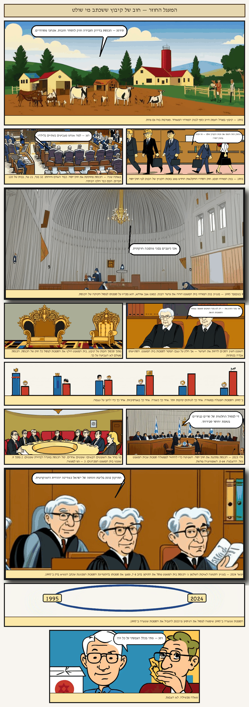

קריאה
מאמרים, הסברים ומסמכי דפוסים. השכבה המידעית של הפרויקט: חומרים שמחברים את הפסיקות בליבה התיעודית לתמונה הגדולה. כל פריט נסקר על-ידי מתאמים וכולל סעיף 'הוגנות אדברסרית' המביא את העמדה הנגדית בכתבי בעליה שלה.

פרדוקס מקור הסמכות
סיפור מצויר ב-12 לוחות: כיצד סכסוך חוב קטן בקיבוץ הפך לכלי שבאמצעותו שאב בית משפט בלתי-נבחר את סמכותו מתוך חוקי-היסוד של הכנסת עצמה — ולאחר מכן השתמש באותה סמכות כדי לחסן את עצמו מפני ניסיון הכנסת היחיד לרסן אותה. גרסה ידידותית, מצוירת, של מאמר היסוד של הפרויקט.
התחל לקרוא →ממזרחי לבג״ץ 5658/23 — תיעוד שלושה עשורים של התפשטות שיפוטית
מסה נרטיבית המתחקה אחר הקשת ההיסטורית — מפסק דין בנק המזרחי (1995), שבו הצהיר בית המשפט העליון על סמכותו לבטל חקיקה רגילה, ועד לבג״ץ 5658/23 (ינואר 2024), שבו הרחיב בית המשפט את סמכותו לתיקוני חוקי-יסוד עצמם. המסה מאמצת את תזת היוריסטוקרטיה של כהן-אליה כמסגרת פרשנית מרכזית, מכירה בתזת השימור ההגמוני של הירשל בסעיף ההוגנות האדברסרית, ומתבססת על התיעוד האמפירי שבליבה התיעודית של הפרויקט.
הסברסמכות מכוננת וחוקי-יסוד
מה משמעות פעולתה של הכנסת בשני תפקידים — כמחוקקת וכרשות מכוננת — וכיצד נקבעה ב-1995 ההרחבה הדוקטרינרית של ביקורת שיפוטית לתיקוני חוקי-יסוד, ויושמה לראשונה ב-2024.
הסברהוועדה לבחירת שופטים
כיצד בנויה הוועדה הישראלית לבחירת שופטים, מהו כלל הרוב המיוחס שנותן הלכה למעשה לבית המשפט היושב על המדוכה זכות וטו על יורשיו, ומדוע הפך מוסד זה למוקד המרכזי של מאמצי הרפורמה לאחר ינואר 2024.
הסברעילת הסבירות
מהי 'סבירות' כעילה לביקורת שיפוטית על החלטות הרשות המבצעת, כיצד הורחבה הדוקטרינה תחת אהרן ברק, ומדוע הפכה לזירת ההתגוששות המרכזית של רפורמת 2023.
תיעוד דפוסדפוס: התערבויות בית המשפט העליון בהחלטות הרשויות הנבחרות, 1976–2026
ניתוח דפוסים אמפירי המבוסס על 13 פסיקות-מפתח שנבחרו מתוך הליבה התיעודית של הפרויקט (המונה כיום 20 פסיקות בסך הכל). הנתונים פרושים על-פני כחמישה עשורים ושלוש שכבות דוקטרינריות — הצהרת סמכות יסודית (1995-1976), גיבוש דוקטרינת השימוש לרעה בסמכות מכוננת (2024-2021), והתערבות אקטיבית (2026-2014). ב-12 מתוך 13 המקרים בית המשפט ביטל את הפעולה שעמדה לביקורת או הצהיר על סמכות חדשה לגביה; באחד נמנע.
תיעוד דפוסמפתח הראיות: כל מקרה, מספר התיק, והמקור
עמוד אחד למציאת ההוכחה במהירות: 22 פסיקות ו-48 מקרים — מספר תיק, תקציר, וקישור ישיר למקור.
תיעוד דפוספרשנות מצמצמת: כיצד בית המשפט העליון מרוקן חוקים מכוחם — ולצד זאת, החוקים שנפסלו
ספרייה ציבורית מאומתת של 48 מקרים (1964–2025) שבהם בית המשפט העליון פסל חוקים של הכנסת — או צמצם אותם בפרשנות (reading down — פרשנות מצמצמת) עד שרוקנו מכוחם, מבלי לבטלם רשמית. לכל מקרה מספר תיק, תאריך, הרכב ומקור.
תיעוד דפוסהיכן הימין מסמן את הקו
אוסף מתועד של אמירות מיוחסות מדמויות מהימין בנוגע להחלטת הממשלה מיולי 2026 שלא לקיים פסיקה של בג\"ץ. ציטוט בלבד, במילותיהם שלהם — עם מקור, ייחוס ורמת ודאות לכל אמירה.